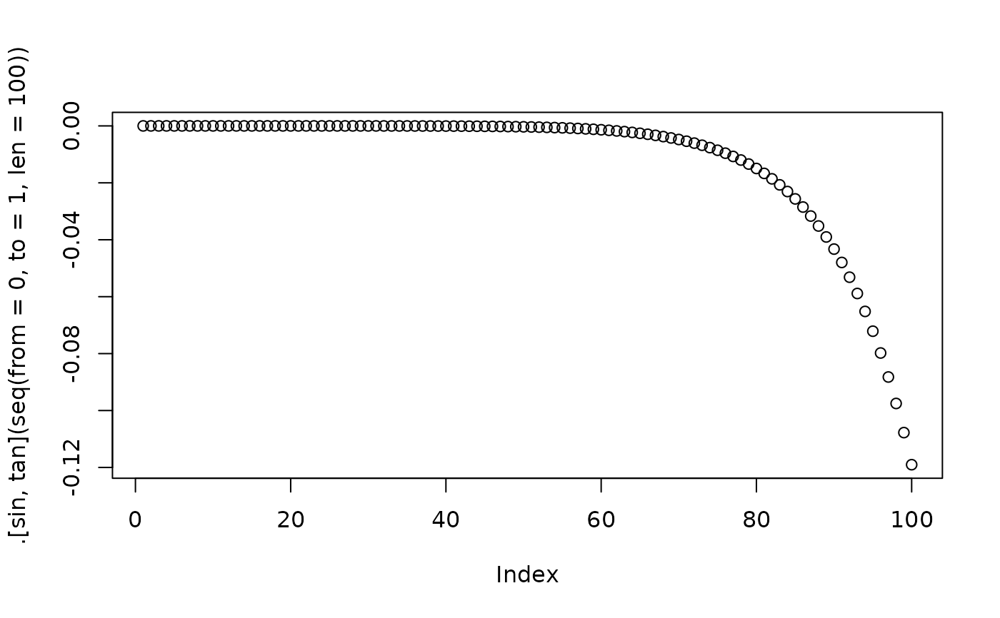

dot.RdThe dot object is defined so that .[x,y] returns the commutator
of x and y, that is, xy-yx or the Lie bracket
\([x,y]\). It would have been nice to use [x,y] (that is,
without the dot) but although this is syntactically consistent, it
cannot be done in R.
The “meat” of the dot functionality is:
setClass("dot", slots = c(ignore='numeric'))
`.` <- new("dot")
setMethod("[",signature(x="dot",i="ANY",j="ANY"),function(x,i,j,drop){i*j-j*i})The package code includes other bits and pieces such as informative
error messages for idiom such as .[]. The package defines a
matrix method for the dot object. This is because “*”
returns (incorrectly, in my view) the elementwise product, not the
matrix product.
The Jacobi identity, satisfied by any associative algebra, is
$$ \left[x,\left[y,z\right]\right]+ \left[y,\left[z,x\right]\right]+ \left[z,\left[x,y\right]\right]=0 $$
and the left hand side is returned by jacobi(), which should be
zero (for some definition of “zero”).
Function ad() returns the adjoint operator. The adjoint
vignette provides details and examples of the adjoint operator.
The dot object is generated by running script inst/dot.Rmd, which
includes some further discussion and technical documentation, and
creates file dot.rda which resides in the data/ directory.
ignore:Object of class "numeric", just a
formal placeholder
signature(x = "dot", i = "ANY", j = "ANY"): ...
signature(x = "dot", i = "ANY", j = "missing"): ...
signature(x = "dot", i = "function", j = "function"): ...
signature(x = "dot", i = "matrix", j = "matrix"): ...
signature(x = "dot", i = "missing", j = "ANY"): ...
signature(x = "dot", i = "missing", j = "missing"): ...
Always returns an object of the same class as xy.
.[as.freealg("x"), as.freealg("y")]
#> free algebra element algebraically equal to
#> + xy - yx
.[as.freealg("x"), as.freealg("y+2z")]
#> free algebra element algebraically equal to
#> + xy + 2xz - yx - 2zx
.[as.freealg("x+y+2xYx"), as.freealg("x+y+2xYx")]
#> [1] 0
x <- rfalg()
y <- rfalg()
z <- rfalg()
jacobi(x,y,z) # Jacobi identity
#> free algebra element algebraically equal to
#> 0
.[x,.[y,z]] + .[y,.[z,x]] + .[z,.[x,y]] # Jacobi, expanded
#> free algebra element algebraically equal to
#> 0
f <- ad(x)
f(y)
#> free algebra element algebraically equal to
#> + 4aaabba + 14aaabc - 36aaabcc + 2aaac - 30aaba + 6aabaaa - 6aabaac - 84aabc -
#> 24aabcc + 10aac - 20aba - 4abaac - 4abbaaa - 12abbaabcc - 10abbaba - 2abbabaac
#> - 28abbabc - 56abc - 14abcaa - 42abcabcc - 35abcba - 7abcbaac - 98abcbc +
#> 24abcca + 36abccaa + 12abccabba + 42abccabc + 6abccac + 18abccbaaa + 30abccc -
#> 2acaa - 6acabcc - 5acba - acbaac - 14acbc + 20baa + 30baaa - 6baaaaa -
#> 18baaaabcc - 15baaaba - 3baaabaac - 42baaabc + 10baabba + 35baabc + 5baac +
#> 4baaca + 6baacaa + 2baacabba + 7baacabc + baacac + 3baacbaaa + 5baacc +
#> 15babaaa + 25bac + 56bca + 84bcaa + 28bcabba + 98bcabc + 14bcac + 42bcbaaa +
#> 70bcc - 10caa - 30cabcc - 25cba - 5cbaac - 70cbc
rM <- function(...){matrix(sample(1:9, 9), 3, 3)} # a random matrix
M <- rM()
N <- rM()
O <- rM()
.[M, N]
#> [,1] [,2] [,3]
#> [1,] -1 -56 -60
#> [2,] 39 -49 -48
#> [3,] 117 29 50
jacobi(M, N, O)
#> [,1] [,2] [,3]
#> [1,] 0 0 0
#> [2,] 0 0 0
#> [3,] 0 0 0
plot(.[sin,tan](seq(from=0, to=1, len=100)))
